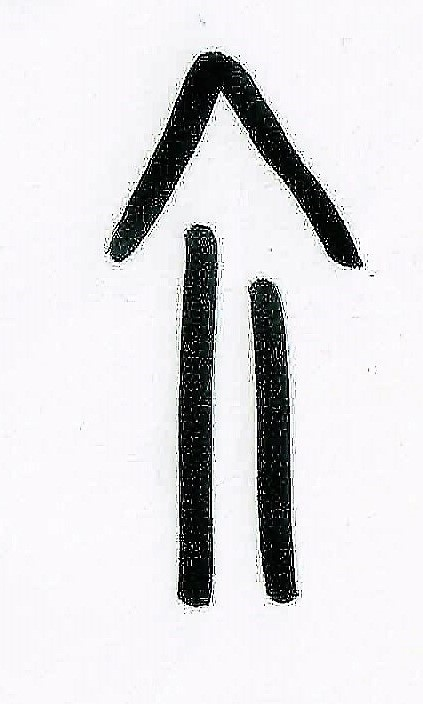
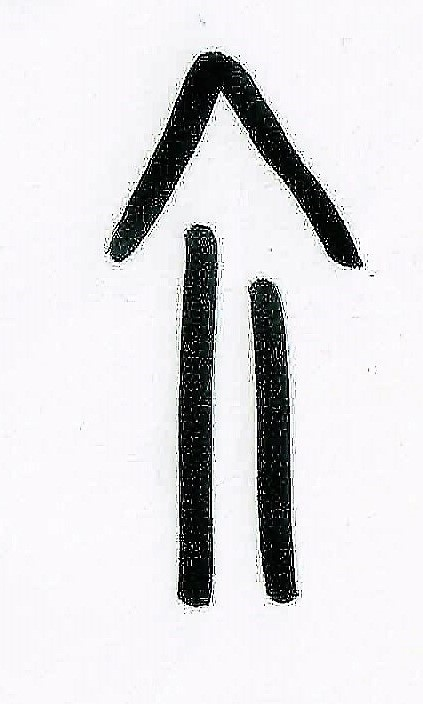
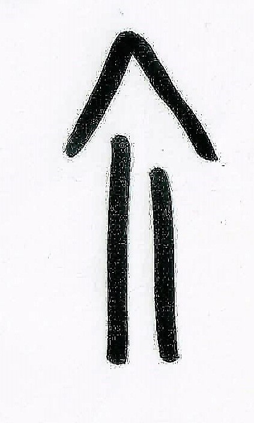
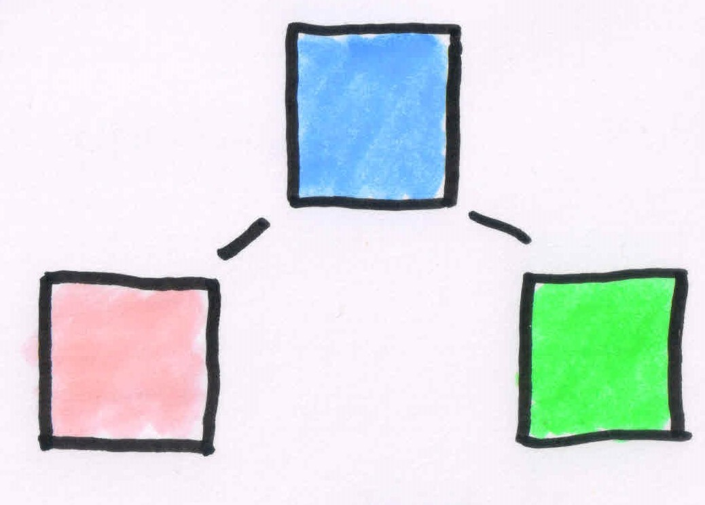
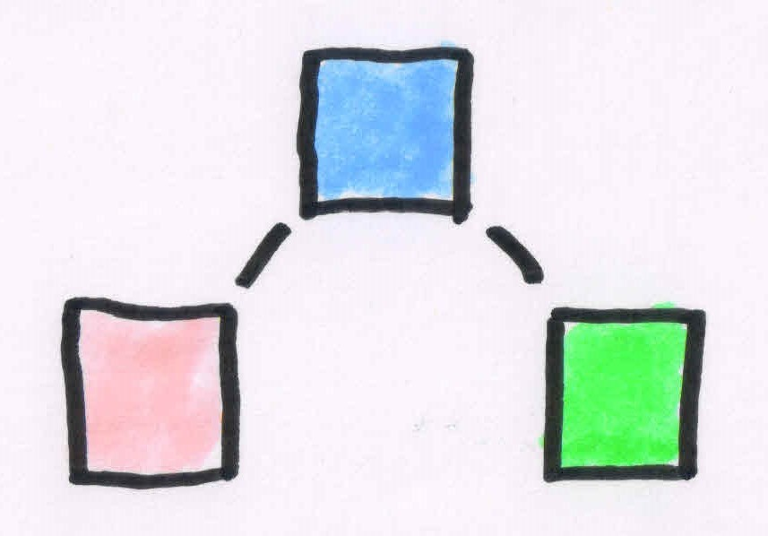
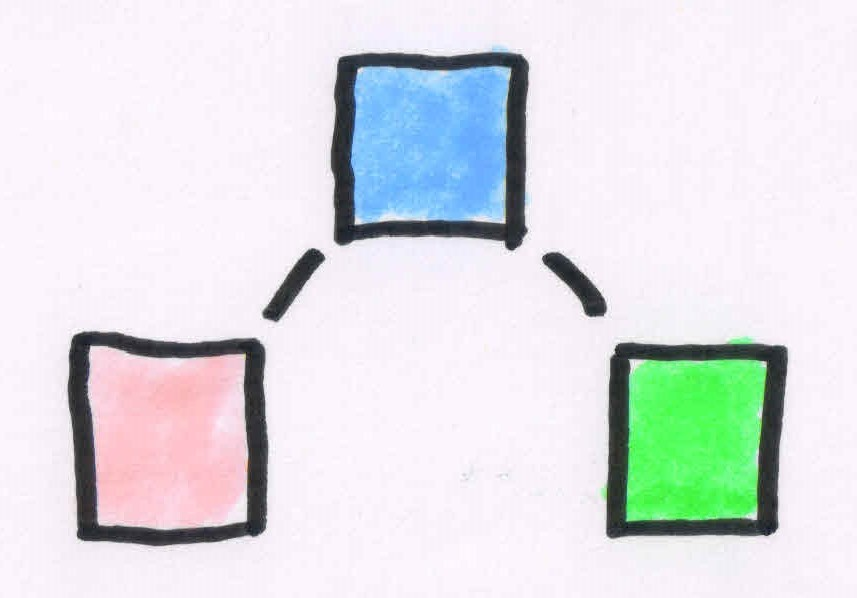
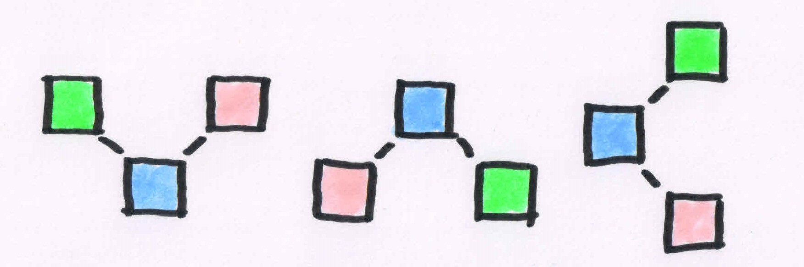
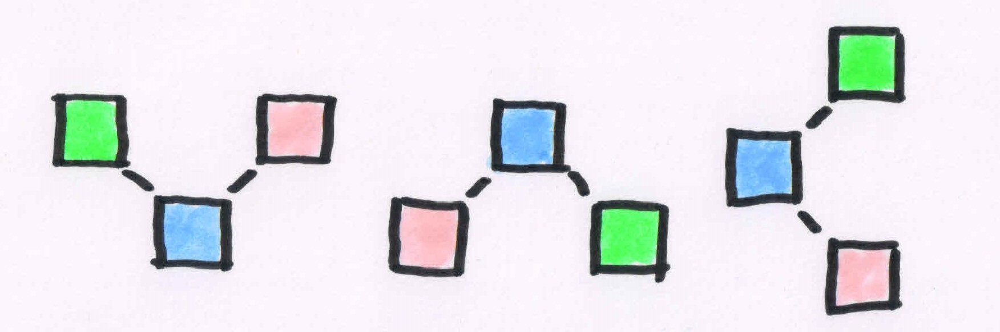

Exercise
Run through the notebook
Can you explain the number of parameters for each layer?
Layer (type) Output Shape Param #
=================================================================
hidden1 (Dense) (None, 50) 200
_________________________________________________________________
softmax (Dense) (None, 3) 153
=================================================================
Total params: 353
Trainable params: 353
Non-trainable params: 0Add a second layer and increase the number of neurons:
do the numbers of parameters still make sense to you?
The Issue: Overfitting
Training Score
 

Test Score
Training Score

Test Score
Training and test scores clearly divert
Second approach: Reduce capacity of model

Original model


Smaller model
less hidden layers, less neurons per layer
Original model

Smaller model
less hidden layers, less neurons per layer
Intuition: Give model less capacity to simply memorize data
Third approach: Use dropout to only train a certain percentage of neurons per batch
Original model

Ensemble of small models (each one overfits on its specific batch)
Original model

Ensemble of small models (each one overfits on its specific batch)
Intuition: Combination of models makes result more robust